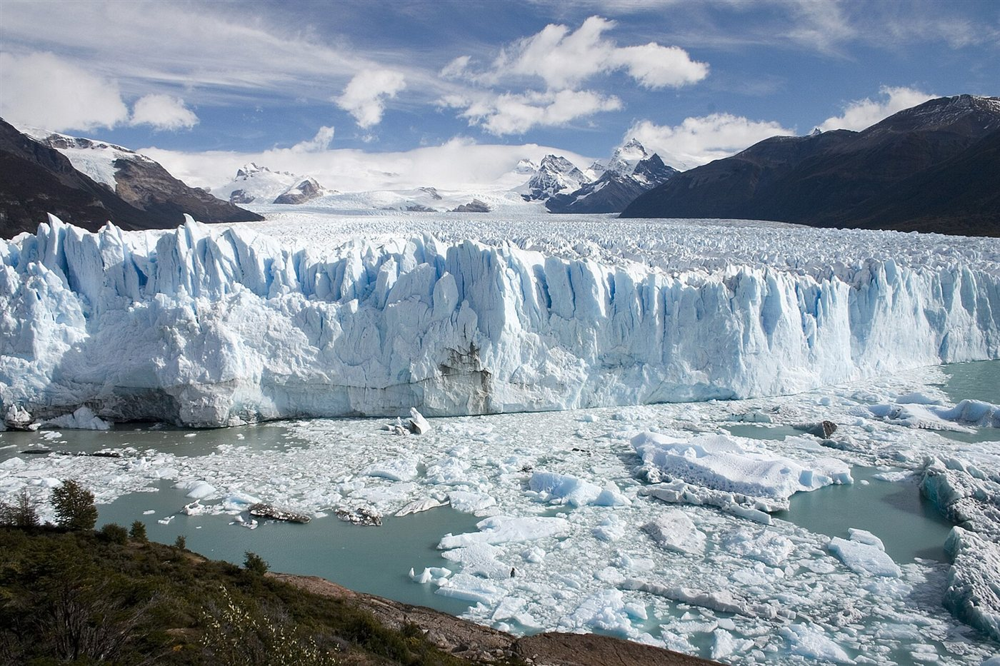

El hielo como fluido muy viscoso; el Perito Moreno
Un cubito de hielo se quiebra si lo golpeás. Sin embargo, una masa de hielo avanza valle abajo como un río lentísimo. El hielo es un sólido cristalino, y aun así, con suficiente peso y suficiente tiempo, fluye. En el Perito Moreno, ese flujo se ve a simple vista cuando el frente avanza, cierra un brazo del lago y, tarde o temprano, se rompe.
El Centro Nacional de Datos de Nieve y Hielo de Estados Unidos explica que, por el peso de su propio hielo, un glaciar se mueve hacia afuera y hacia abajo [1]. Lo hace de dos maneras: por deformación interna del hielo y por deslizamiento sobre las rocas y sedimentos de su base [1].
La deformación, llamada reptación o creep, se debe al peso de la nieve y el hielo que tiene encima y a la presión del hielo de los costados [1]. El hielo es un material blando comparado con la roca, y por eso se deforma mucho más fácilmente [1]. El deslizamiento, en cambio, aprovecha una delgada capa de agua en la base [1]. Como en un flujo cerca de una pared, la parte de abajo se mueve más lento que la de arriba, por la fricción con el suelo [1].
El mazo de cartas blando: pensá en una pila de cartas algo pegajosas apoyada en una rampa. Cada carta se desliza un poquito sobre la de abajo, y la de arriba avanza más que todas. Si además la rampa está mojada, toda la pila resbala un poco.
¿Es el hielo un fluido viscoso común? No. En un fluido newtoniano, la deformación es proporcional al esfuerzo. El hielo sigue, aproximadamente, una ley de potencias [2]:
Esa es la ley de Glen. Con n = 3, duplicar el esfuerzo multiplica por 8 la deformación (un cálculo propio). Es un fluido no newtoniano: se vuelve más fácil de deformar cuanto más se lo carga. Y la ley no es definitiva. M. Behn, D. Goldsby y G. Hirth señalan que, en el laboratorio, ni la reptación por dislocaciones (n ≈ 4) ni el deslizamiento entre granos (n ≈ 1,8) dan un exponente de 3. La ley de Glen es una buena descripción aproximada del flujo, pero su forma no se explica con un único mecanismo [2].
Un punto que suele confundir: el hielo de un glaciar siempre va hacia abajo. «Retroceder» se refiere a la posición del frente. Un glaciar que retrocede no fluye cuesta arriba: simplemente se derrite más rápido de lo que fluye [1]. Funciona como una cinta transportadora [1], alimentada en la zona de acumulación, donde cae la nieve, y gastada abajo, en la zona de ablación [1].
El glaciar Perito Moreno tiene una superficie de 259 km² y es uno de los principales glaciares de salida del Hielo Patagónico Sur [3]. Termina en un frente de unos 5 kilómetros de largo y 55 a 80 metros de alto, con velocidades superficiales de hasta 800 metros por año cerca del frente [3], unos 2 metros por día (un cálculo propio).
Cuando su frente llega a la península de Magallanes, forma un dique de hielo que separa los brazos del sur del Lago Argentino del resto [3]. Del lado cerrado, el agua sube entre 10 y 26 metros [3]. Una combinación de presión del agua y derretimiento va abriendo conductos, que crecen hasta formar un túnel, y el agua lo ensancha hasta que el techo se derrumba [3]. La primera de estas rupturas registradas ocurrió en 1917, y entre ese año y 1988 hubo 16 cierres, que duraron de meses a tres años [3].

Un glaciar fluye porque su propio peso deforma el hielo y lo hace resbalar sobre su base. No es un fluido común: la ley de Glen indica que se ablanda al aumentar el esfuerzo, y su origen microscópico todavía se investiga. El Perito Moreno muestra ese movimiento en una escala humana, con un dique de hielo que el lago termina perforando.
Pregunta para la comunidad: Por la ley hidrostática, ¿qué presión ejerce el agua a 25 metros de profundidad contra un dique de hielo? ¿Por qué el agua puede abrirse paso por debajo, aunque el hielo tenga decenas de metros de alto?